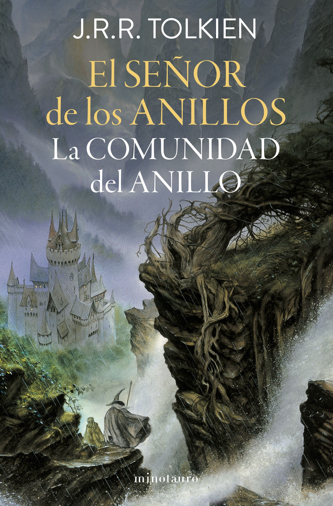

Drácula
¡-20%!
$19.38
Bram Stoker
AlFaguara
Categor√≠as: ü©∏ Terror, Cuentos Clásicos, Ficci√≥n Clásica
Agregar al carritoDescripción
Jonathan Harker, un joven abogado inglés de Londres, tiene que cerrar unos negocios con el misterioso conde Drácula. Viaja hasta el castillo del conde en los Montes Cárpatos de Transilvania, para convertirse en huésped y prisionero de un hombre que no se refleja en los espejos, ni come nunca en su presencia. A partir de aquí, incluso el compromiso amoroso de Harker con la joven Mina Murray se verá afectado. La novela gótica por excelencia, que se mantiene como un referente inalterable desde hace más de cien años.
Cuentos de Muerte y Demencia

$18.50
Edgar Allan Poe
Nórdicalibros
Categor√≠as: üëª Terror, Relatos Cortos, Ficci√≥n
Agregar al carritoDescripción
Un asesino exasperado por el latido del corazón aún palpitante de su víctima... Una institución mental dirigida por alguien ajeno al personal... Una caja misteriosa a bordo de un barco con un terrible secreto... La mirada del hipnotizador que, tal vez, podría paralizar a la misma Muerte... Ponte la cámisa de fuerza y abróchatela bien, porque en estas páginas hay historias de amor perdido, caminos errados... y mentes extraviadas. Esta entrega de los mejores relatos de Poe incluye «El corazón delator», «El sistema del doctor Tarr y el profesor Fether», «La caja oblonga» y «Los hechos del caso del Sr. Valdemar». El terror, lo macabro y el horror siguen alcanzando cotas sobrenaturales gracias a las escalofriantes ilustraciones de Gris Grimly. Abre el libro... si te atreves.
El Señor de los Anillos
$15.91
J. R. R. Tolkien
Booknet
Categor√≠as: üêâ Fantas√≠a, √âpica, Ficci√≥n
Agregar al carritoDescripción
La primera entrega de la trilogía de J. R. R. Tolkien El Señor de los Anillos. Empieza tu viaje a la Tierra Media. Edición revisada. Un héroe inesperado. Una misión peligrosa. La mayor aventura que jamás te hayan contado. En la adormecida e idílica Comarca, un joven hobbit recibe un encargo: custodiar el Anillo Único y emprender el viaje para su destrucción en la Grieta del Destino. Acompañado por magos, hombres, elfos y enanos, atravesará la Tierra Media y se internará en las sombras de Mordor, perseguido siempre por las huestes de Sauron, el Señor Oscuro, dispuesto a recuperar su creación para establecer el dominio definitivo del Mal.
Harry Potter y la Piedra Filosofal

$18.50
J. K. Rowling
Salamandra
Categor√≠as: ü™Ñ Fantas√≠a, Aventuras, Juvenil
Agregar al carritoDescripción
«Con las manos temblorosas, Harry le dio la vuelta al sobre y vio un sello de lacre púrpura con un escudo de armas: un león, un águila, un tejón y una serpiente, que rodeaban una gran letra H.» Harry Potter nunca ha oído hablar de Hogwarts hasta que empiezan a caer cartas en el felpudo del número 4 de Privet Drive. Llevan la dirección escrita con tinta verde en un sobre de pergamino amarillento con un sello de lacre púrpura, y sus horripilantes tíos se apresuran a confiscarlas. Más tarde, el día que Harry cumple once años, Rubeus Hagrid, un hombre gigantesco cuyos ojos brillan como escarabajos negros, irrumpe con una noticia extraordinaria: Harry Potter es un mago, y le han concedido una plaza en el Colegio Hogwarts de Magia y Hechicería. ¡Una aventura increíble está a punto de comenzar!
Llámame por tu Nombre

$12.45
André Aciman
Debolsillo
Categor√≠as: üíî Romance, Drama, Contemporáneo
Agregar al carritoDescripción
Durante la década de los ochenta, la familia de Elio recibe todos los veranos en su casa de Italia a estudiantes o creadores jóvenes que, a cambio de alojamiento, ayudan al padre en las investigaciones vinculadas a su cátedra universitaria. Esta vez el elegido es Oliver, un escritor norteamericano que pronto excita la imaginación de Elio. A lo largo de las siguientes semanas, la obsesión y el miedo, la fascinación y el deseo intensificarán la pasión de ambos.
Las Ventajas de ser Invisible

$12.75
Stephen Chbosky
Alfaguara
Categor√≠as: üé≠ Juvenil, Drama, Contemporáneo
Agregar al carritoDescripción
Charlie es un chico realmente especial: lee muchísimo, no sale con chicos ni con chicas y reflexiona sobre el mundo desde un punto de vista muy particular. Su ingenuidad, su incapacidad para relacionarse normalmente y su extrema sinceridad le crean más de un problema, especialmente ahora que su único amigo ha muerto. Conocer a Sam y Patrick, los chicos más populares y vitales del colegio, provocara un giro radical en su vida que lo sumergirá de pleno en la adolescencia.
Romeo y Julieta

$7.15
William Shakespeare
SKLA
Categor√≠as: üèõÔ∏è Clásicos, Tragedia, Romance
Agregar al carritoDescripción
Una de las historias de amor más icónicas de la literatura, escrita por el legendario William Shakespeare es una tragedia que cuenta la historia de dos jóvenes que, a pesar de la oposición de sus familiares, rivales entre sí, deciden casarse de forma ilegal y vivir juntos; sin embargo, la presión de esa rivalidad y una serie de fatalidades conducen a que la pareja elija el suicidio antes que vivir separados.
Little Women

$12.55
Louisa May Alcott
Puffin Books
Categor√≠as: üìú Clásicos, Juvenil, Familiar
Agregar al carritoDescripción
El clásico cuento de Louisa May Alcott sobre cuatro hermanas en una edición de lujo de tapa dura, con hermosas ilustraciones de portada de Anna Bond, la artista detrás de la mundialmente conocida marca de papelería Rifle Paper Co. Meg, la adulta, Jo, la marimacha, Beth, la tímida y Amy, la precoz. Las cuatro hermanas March no podrían ser más diferentes. Pero con su padre en la guerra y su madre trabajando para mantener a la familia, tienen que confiar unas en otras. Ya sea que estén montando una obra de teatro, formando una sociedad secreta o celebrando la Navidad, hay una cosa que no pueden evitar preguntarse: ¿Papá regresará a casa sano y salvo?
Este Dolor no es Mío

$21.99
Mark Wolyn
GAIA
Categor√≠as: ü߆ Psicolog√≠a, Autoayuda
Agregar al carritoDescripción
Existen pruebas fiables de que muchos problemas crónicos o de largo plazo pueden no tener su origen en nuestras vivencias inmediatas o en desequilibrios químicos de nuestro cerebro, sino en las vidas de nuestros padres, abuelos o bisabuelos. Mark Wolynn, fundador y director del Instituto de Constelaciones Familiares (FCI) y pionero en el estudio de los traumas familiares heredados, presenta en "Este dolor no es mío" un enfoque transformador que permite resolver problemas crónicos que no han podido ser aliviados mediante la terapia tradicional, los medicamentos u otras medidas.
Sin Miedo

$14.50
Rafael Santandreu
Grijalbo
Categor√≠as: üìö Psicolog√≠a, Autoayuda
Agregar al carritoDescripción
El método comprobado para superar la ansiedad, las obsesiones, la hiponcondría. Sin miedo» es el método definitivo. Cualquiera puede ponerlo en práctica siguiendo las instrucciones y, claro está, sin necesidad de tomar fármacos. Prepárate para convertirte en la mejor versión de ti mismo: una persona libre, poderosa y feliz. ¿Es posible vivir sin miedo? Por supuesto.